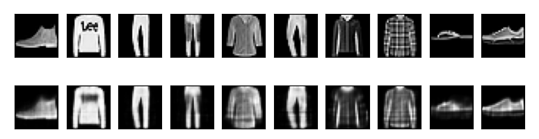
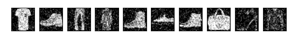
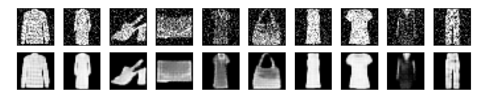
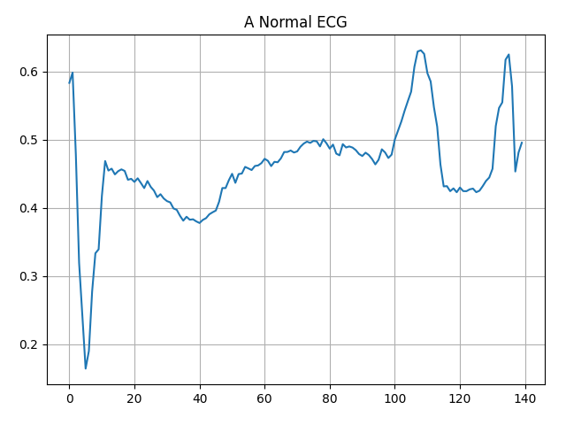
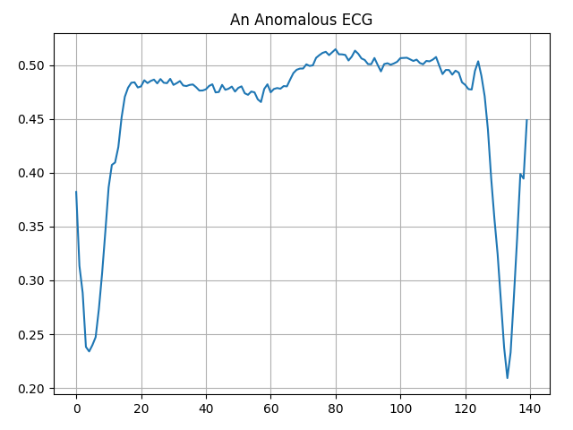

9.8 Intro to Autoencoders
Created Date: 2025-06-16
This tutorial introduces autoencoders with three examples: the basics, image denoising, and anomaly detection, and demonstrates how to train a Variational Autoencoder (VAE) on the MNIST dataset.
An autoencoder is a special type of neural network that is trained to copy its input to its output. For example, given an image of a handwritten digit, an autoencoder first encodes the image into a lower dimensional latent representation, then decodes the latent representation back to an image. An autoencoder learns to compress the data while minimizing the reconstruction error.
To start, you will train the basic autoencoder using the Fashion MNIST dataset. Each image in this dataset is \(28 \times 28\) pixels:
transform = torchvision.transforms.Compose([torchvision.transforms.ToTensor()])
train_set = torchvision.datasets.FashionMNIST(root='./data',
train=True,
download=True,
transform=transform)
train_loader = torch.utils.data.DataLoader(train_set, batch_size=64, shuffle=True)
test_set = torchvision.datasets.FashionMNIST(root='./data',
train=False,
download=True,
transform=transform)
test_loader = torch.utils.data.DataLoader(test_set, batch_size=64, shuffle=False)
images, labels = next(iter(train_loader))
print(images.shape)
print(labels.shape)torch.Size([64, 1, 28, 28]) torch.Size([64])
9.8.1 First Example: Basic Autoencoder
File basic_auto_encoder.py define an autoencoder with two Dense layers: an encoder, which compresses the images into a 64 dimensional latent vector, and a decoder, that reconstructs the original image from the latent space.
To define our model, use the PyTorch API:
class AutoEncoder(torch.nn.Module):
def __init__(self, latent_dim, shape):
super().__init__()
self.lantent_dim = latent_dim
self.shape = shape
self.input_dim = 1
for dim in shape:
self.input_dim *= dim
self.encoder = torch.nn.Sequential(
torch.nn.Flatten(),
torch.nn.Linear(self.input_dim, latent_dim),
torch.nn.ReLU(),
)
self.decoder = torch.nn.Sequential(
torch.nn.Linear(latent_dim, self.input_dim),
torch.nn.Sigmoid(),
torch.nn.Unflatten(1, shape)
)
def forward(self, x):
encoded = self.encoder(x)
decoded = self.decoder(encoded)
return decoded
device = torch.device('cuda' if torch.cuda.is_available() else 'cpu')
latent_dim = 64
autoencoder = AutoEncoder(latent_dim, train_set[0][0].shape).to(device)
sample_input, _ = next(iter(test_loader)).to(device)
output = autoencoder.forward(sample_input)
print(output.shape)torch.Size([64, 1, 28, 28])
Train the model using images as both the input and the target. The encoder will learn to compress the dataset from 784 dimensions to the latent space, and the decoder will learn to reconstruct the original images.
criterion = torch.nn.MSELoss()
optimizer = torch.optim.Adam(autoencoder.parameters(), lr=1e-3)
for epoch in range(10):
autoencoder.train()
total_loss = 0
for images, _ in train_loader:
images = images.to(device)
outputs = autoencoder(images)
loss = criterion(outputs, images)
optimizer.zero_grad()
loss.backward()
optimizer.step()
total_loss += loss.item()
print(f"Epoch [{epoch+1}/10], train Loss: {total_loss / len(train_loader):.4f}")
autoencoder.eval()
mse_total = 0
with torch.no_grad():
for images, _ in test_loader:
images = images.to(device)
outputs = autoencoder(images)
loss = criterion(outputs, images)
mse_total += loss.item()
print(f"Test reconstruction MSE: {mse_total / len(test_loader):.4f}")Epoch [1/10], train Loss: 0.0330 Epoch [2/10], train loss: 0.0158 Epoch [3/10], train loss: 0.0130 Epoch [4/10], train loss: 0.0119 Epoch [5/10], train loss: 0.0113 Epoch [6/10], train loss: 0.0110 Epoch [7/10], train loss: 0.0108 Epoch [8/10], train loss: 0.0105 Epoch [9/10], train loss: 0.0104 Epoch [10/10], train loss: 0.0103 Test reconstruction MSE: 0.0105
Now that the model is trained, let's test it by encoding and decoding images from the test set.
encoded_imgs = autoencoder.encoder(sample_input.to(device))
decoded_imgs = autoencoder.decoder(encoded_imgs).detach().cpu().numpy()
n = 10
pyplot.figure(figsize=(9, 2))
for i in range(n):
# display original
ax = pyplot.subplot(2, n, i + 1)
pyplot.imshow(sample_input[i].squeeze(), cmap="gray")
ax.get_xaxis().set_visible(False)
ax.get_yaxis().set_visible(False)
# display reconstruction
ax = pyplot.subplot(2, n, i + 1 + n)
pyplot.imshow(decoded_imgs[i].squeeze(), cmap="gray")
ax.get_xaxis().set_visible(False)
ax.get_yaxis().set_visible(False)
pyplot.show()
Figure 1 - Basic Autoencoder
9.8.2 Second example: Image denoising
An autoencoder can also be trained to remove noise from images. In the following section, you will create a noisy version of the Fashion MNIST dataset by applying random noise to each image. You will then train an autoencoder using the noisy image as input, and the original image as the target.
image_denoising.py reimport the dataset to omit the modifications made earlier. Adding random noise to the images:
sample_images, sample_labels = next(iter(train_loader))
print(sample_images.shape)
print(sample_labels.shape)
noise_factor = 0.2
noisy_images = sample_images + noise_factor * torch.randn_like(sample_images)
noisy_images = torch.clamp(noisy_images, 0.0, 1.0)
n = 10
pyplot.figure(figsize=(6, 2))
for i in range(n):
ax = pyplot.subplot(1, n, i + 1)
pyplot.imshow(noisy_images[i].squeeze())
ax.get_xaxis().set_visible(False)
ax.get_yaxis().set_visible(False)
pyplot.gray()
pyplot.show()
Figure 2 - Sample Image Denoising
In this example, we will train a convolutional autoencoder using Conv2D layers in the encoder, and Conv2DTranspose layers in the decoder.
class Denoise(torch.nn.Module):
def __init__(self):
super().__init__()
self.encoder = torch.nn.Sequential(
torch.nn.Conv2d(1, 16, kernel_size=3, stride=2, padding=1),
torch.nn.ReLU(),
torch.nn.Conv2d(16, 8, kernel_size=3, stride=2, padding=1),
)
self.decoder = torch.nn.Sequential(
torch.nn.ConvTranspose2d(
8, 16, kernel_size=3, stride=2, padding=1, output_padding=1
),
torch.nn.ReLU(),
torch.nn.ConvTranspose2d(
16, 1, kernel_size=3, stride=2, padding=1, output_padding=1
),
torch.nn.Sigmoid(),
)
def forward(self, x):
encoded = self.encoder(x)
decoded = self.decoder(encoded)
return decodedLet's take a look at a summary of the encoder. Notice how the images are downsampled from \(28 \times 28\) to \(7 \times 7\).
----------------------------------------------------------------
Layer (type) Output Shape Param #
================================================================
Conv2d-1 [-1, 16, 14, 14] 160
ReLU-2 [-1, 16, 14, 14] 0
Conv2d-3 [-1, 8, 7, 7] 1,160
================================================================
Total params: 1,320
Trainable params: 1,320
Non-trainable params: 0
----------------------------------------------------------------
Input size (MB): 0.00
Forward/backward pass size (MB): 0.05
Params size (MB): 0.01
Estimated Total Size (MB): 0.06
----------------------------------------------------------------
The decoder upsamples the images back from \(7 \times 7\) to \(28 \times 28\).
----------------------------------------------------------------
Layer (type) Output Shape Param #
================================================================
ConvTranspose2d-1 [-1, 16, 14, 14] 1,168
ReLU-2 [-1, 16, 14, 14] 0
ConvTranspose2d-3 [-1, 1, 28, 28] 145
Sigmoid-4 [-1, 1, 28, 28] 0
================================================================
Total params: 1,313
Trainable params: 1,313
Non-trainable params: 0
----------------------------------------------------------------
Input size (MB): 0.00
Forward/backward pass size (MB): 0.06
Params size (MB): 0.01
Estimated Total Size (MB): 0.07
----------------------------------------------------------------
Params size (MB): 0.01
Estimated Total Size (MB): 0.07
----------------------------------------------------------------
Plotting both the noisy images and the denoised images produced by the autoencoder.

Figure 3 - Denosing Comparison
9.8.3 Third example: Anomaly detection
In this example, you will train an autoencoder to detect anomalies on the ECG5000 dataset. This dataset contains 5,000 Electrocardiograms, each with 140 data points. We will use a simplified version of the dataset, where each example has been labeled either 0 (corresponding to an abnormal rhythm), or 1 (corresponding to a normal rhythm). You are interested in identifying the abnormal rhythms.
Note: This is a labeled dataset, so you could phrase this as a supervised learning problem. The goal of this example is to illustrate anomaly detection concepts you can apply to larger datasets, where you do not have labels available (for example, if you had many thousands of normal rhythms, and only a small number of abnormal rhythms).
How will we detect anomalies using an autoencoder? Recall that an autoencoder is trained to minimize reconstruction error. You will train an autoencoder on the normal rhythms only, then use it to reconstruct all the data. Our hypothesis is that the abnormal rhythms will have higher reconstruction error. You will then classify a rhythm as an anomaly if the reconstruction error surpasses a fixed threshold.
The dataset we will use is based on one from timeseriesclassification.com .
url = r"https://github.com/artinte/tiny-datasets/raw/refs/heads/develop/ecg.csv"
# Download the dataset
dataframe = pandas.read_csv(url)
raw_data = dataframe.values
dataframe.head()
print(raw_data.shape)(4997, 141)
We need preprocess the data, normalize the data to \([0,1]\) , will train the autoencoder using only the normal rhythms, which are labeled in this dataset as 1. Separate the normal rhythms from the abnormal rhythms.
# The last element contains the labels
labels = raw_data[:, -1]
# The other data points are the electrocadriogram data
data = raw_data[:, 0:-1]
train_data, test_data, train_labels, test_labels = (
sklearn.model_selection.train_test_split(
data, labels, test_size=0.2, random_state=21
)
)
train_data = torch.from_numpy(train_data)
test_data = torch.from_numpy(test_data)
# normalize the data to [0, 1]
min_val = torch.min(train_data)
max_val = torch.max(train_data)
train_data = (train_data - min_val) / (max_val - min_val)
test_data = (test_data - min_val) / (max_val - min_val)
train_data = train_data.to(torch.float32)
test_data = test_data.to(torch.float32)
train_labels = train_labels.astype(bool)
test_labels = test_labels.astype(bool)
normal_train_data = train_data[train_labels]
normal_test_data = test_data[test_labels]
anomalous_train_data = train_data[~train_labels]
anomalous_test_data = test_data[~test_labels]
train_labels = torch.tensor(train_labels)
test_labels = torch.tensor(test_labels)
train_dataset = torch.utils.data.TensorDataset(train_data, train_labels)
test_dataset = torch.utils.data.TensorDataset(test_data, test_labels)
train_loader = torch.utils.data.DataLoader(train_dataset, batch_size=64, shuffle=True)
test_loader = torch.utils.data.DataLoader(train_dataset, batch_size=64, shuffle=False)Plot a normal ECG:
input_dims = 140
pyplot.grid()
pyplot.plot(numpy.arange(input_dims), normal_train_data[0])
pyplot.title("A Normal ECG")
pyplot.show()
Figure 4 - A Normal ECG
Plot an anomalous ECG:
pyplot.grid()
pyplot.plot(numpy.arange(input_dims), anomalous_train_data[0])
pyplot.title("An Anomalous ECG")
pyplot.show()
Figure 5 - An Anomalous ECG
Build the model:
class AnomalyDetector(torch.nn.Module):
def __init__(self, input_dim):
super().__init__()
self.encoder = torch.nn.Sequential(
torch.nn.Linear(input_dim, 32),
torch.nn.ReLU(),
torch.nn.Linear(32, 16),
torch.nn.ReLU(),
torch.nn.Linear(16, 8),
torch.nn.ReLU(),
)
self.decoder = torch.nn.Sequential(
torch.nn.Linear(8, 16),
torch.nn.ReLU(),
torch.nn.Linear(16, 32),
torch.nn.ReLU(),
torch.nn.Linear(32, 140),
torch.nn.Sigmoid(),
)
def forward(self, x):
encoded = self.encoder(x)
decoded = self.decoder(encoded)
return decoded
device = torch.device("cuda" if torch.cuda.is_available() else "cpu")
autoencoder = AnomalyDetector(input_dims).to(device)
optimizer = torch.optim.Adam(autoencoder.parameters(), lr=1e-3)
criterion = torch.nn.L1Loss()
train_history = []
val_history = []
for epoch in range(10):
autoencoder.train()
total_loss = 0
for data, labels in train_loader:
data = data.to(device)
outputs = autoencoder.forward(data)
loss = criterion(outputs, data)
optimizer.zero_grad()
loss.backward()
optimizer.step()
total_loss += loss.item()
autoencoder.eval()
val_loss = 0
with torch.no_grad():
for data, labels in test_loader:
data = data.to(device)
outputs = autoencoder.forward(data)
loss = criterion(outputs, data)
val_loss += loss.item()
print(f"Epoch [{epoch+1}/10], train loss: {total_loss / len(train_loader):.4f}, val loss: {val_loss / len(test_loader):.4f}")Notice that the autoencoder is trained using only the normal ECGs, but is evaluated using the full test set.
We will soon classify an ECG as anomalous if the reconstruction error is greater than one standard deviation from the normal training examples. First, let's plot a normal ECG from the training set, the reconstruction after it's encoded and decoded by the autoencoder, and the reconstruction error.
encoded_data = autoencoder.encoder(normal_test_data.to(device))
decoded_data = autoencoder.decoder(encoded_data).detach().cpu().numpy()
pyplot.plot(normal_test_data[0], 'b')
pyplot.plot(decoded_data[0], 'r')
pyplot.fill_between(numpy.arange(140), decoded_data[0], normal_test_data[0], color='lightcoral')
pyplot.legend(labels=['Input', 'Reconstruction', 'Error'])
pyplot.show()Create a similar plot, this time for an anomalous test example:
encoded_data = autoencoder.encoder(anomalous_test_data.to(device))
decoded_data = autoencoder.decoder(encoded_data).detach().cpu().numpy()
pyplot.plot(anomalous_test_data[0], 'b')
pyplot.plot(decoded_data[0], 'r')
pyplot.fill_between(numpy.arange(140), decoded_data[0], anomalous_test_data[0], color='lightcoral')
pyplot.legend(labels=["Input", "Reconstruction", "Error"])
pyplot.show()Detect anomalies by calculating whether the reconstruction loss is greater than a fixed threshold. In this tutorial, you will calculate the mean average error for normal examples from the training set, then classify future examples as anomalous if the reconstruction error is higher than one standard deviation from the training set.
Plot the reconstruction error on normal ECGs from the training set:
Choose a threshold value that is one standard deviations above the mean.
If you examine the reconstruction error for the anomalous examples in the test set, you'll notice most have greater reconstruction error than the threshold. By varing the threshold, you can adjust the precision and recall of your classifier.
Classify an ECG as an anomaly if the reconstruction error is greater than the threshold.
9.8.4 Variational Autoencoder
Demonstrates how to train a Variational Autoencoder (VAE)on the MNIST dataset. A VAE is a probabilistic take on the autoencoder, a model which takes high dimensional input data and compresses it into a smaller representation.
Unlike a traditional autoencoder, which maps the input onto a latent vector, a VAE maps the input data into the parameters of a probability distribution, such as the mean and variance of a Gaussian. This approach produces a continuous, structured latent space, which is useful for image generation.
9.8.5 Define Networks
In this VAE example, use two small ConvNets for the encoder and decoder networks. In the literature, these networks are also referred to as inference/recognition and generative models respectively. Let \(x\) and \(z\) denote the observation and latent variable respectively in the following descriptions.